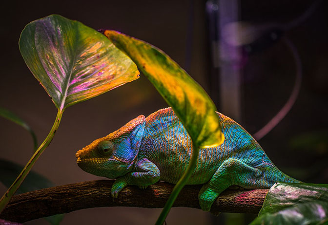

Wild Life
Guardians of the Forest
Forests are more than trees — they are bustling communities of life. From the tiniest insects that pollinate flowers to the apex predators that keep populations in check, every species plays a role. Sadly, deforestation, poaching, and climate change are threatening this delicate balance. Protecting wildlife means protecting these ecosystems, which in turn sustains humans too. Observing animals in their natural habitats can teach patience, respect, and an understanding of life cycles that are far more complex than they appear on the surface.